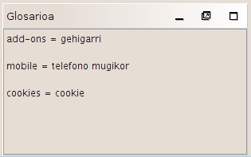

Glosarioak
OmegaT-k erabiltzen dituen glosarioak eskuz sortu eta eguneratzen diren fitxategiak dira.
OmegaT-ren proiektu batek glosario bat edo bat baino gehiago badauka, glosarioan dauden eta segmentu aktiboan ere agertzen diren termino guztiak glosarioen bisorean erakutsiko dira.
Erabilera
Existitzen den glosario bat erabiltzeko, /glossary karpetan kokatu behar da, proiektua sortu ondoren. Proiektu bat irekitzen denean, OmegaT-k automatikoki detektatzen ditu karpeta honetan dauden glosario-fitxategiak. OmegaT-k segmentu aktiboko edozein hitz glosario-fitxategietan aurkitzen badu, glosario-panelean erakusten du:

= ikurraren aurretik dagoen hitza sorburu-hitza da eta bere itzulpena(k) = ikurraren ondoren dago. Hiztegiko sarrera bakoitzari iruzkin bat erants dakioke (ikus "aditz iragankor" bigarren elementurako). Glosarioen funtzioak parekatze zehatzak aurkitzen ditu soilik (alegia, ez ditu forma flexiboak aurkitzen, etab.). Glosario-fitxategiei termino berriak erantsi dakizkieke itzulpena egin ahala (adibidez, testu-editore bat erabiliz), baina OmegaT-k ez ditu gehitutako hitz berriak ezagutuko proiektua birkargatzen den arte.
Fitxategi-formatua
Glosario-fitxategiak hiru zutabez osatutako testu arrunteko fitxategiak dira. Zutabeak tabuladorez mugaturik daude. Lehen eta bigarren zutabeek sorburu- eta helburu-terminoak gordetzen dituzte, hurrenez hurren. Hirugarren zutabea informazio osagarria gordetzeko erabili daiteke. Glosario-fitxategiek sistemaren kodeketa lehenetsia eduki dezakete (fitxategiek .tab luzapena izango dute) edo UTF-8 kodeketa (.utf8 luzapena edukiko dute). Unicode kodeketa (UTF-8) hobesten da, arrazoi nabariengatik.
Nola sortu glosarioak
Metodoa oso erraza da arreta pixka bat eskaintzen bazaio. OpenOffice.org Writer behar da, eta beraz, oraindik ez baduzu egin, deskargatu eta instala ezazu OpenOffice.org. Abiarazi OpenOffice.org eta ireki testuko dokumentu bat edo abiarazi zuzenean "OpenOffice.org Writer".
Zurian dagoen dokumentuan sartu glosarioko zure terminoak, honela: sorburu-hizkuntzako terminoa, tabuladorea, helburu-hizkuntzako terminoa, tabuladorea, elementuaren iruzkina edo azalpena, eta Enter tekla sakatu. Tabuladorea teklatuaren ezkerretara dagoen gezidun tekla da. Ez baduzu iruzkinik erantsi nahi, bigarren tabuladorea ez da beharrezkoa. "Termino" bat hitz bakarra edo esaldi osoa izan daiteke. Bigarren lerroan, sartu bigarren terminoa eta bere itzulpena.
Terminoak sartzea amaitu ondoren, bi "zutabe" egongo dira dokumentuan, sorburu-hizkuntzako terminoak ezkerrekoan eta helburu-hizkuntzakoak eskuinekoan, eta agian hirugarren zutabe bat, zure iruzkin eta azalpenak dituena. Tabuladorea (→ azpiko adibidean) eta Enter karaktereak ikusteko moduan jar daitezke, Writer aplikazioaren goiko barran dagoen ¶ ikonoan sakatuta. Adibidetzat, hemen daude ingelesa-euskara glosario baten lerro gutxi batzuk:
word →hitz→(hitza, hitzak)¶
small house→etxola→(etxe)¶
dog →txakur→(zakur)¶
horse→zaldi→¶
EZ erabili OpenOffice.org-en "zutabeen" funtzioa zutabeak sortzeko: tabuladorea besterik ezin da erabili sorburu- eta helburu-terminoak banatzeko.
Amaitu ondoren, hautatu Fitxategia > Gorde honela. "Fitxategiaren kokapena" kutxan, eman izan bat zure glosarioari, eta atzetik idatzi ".utf8" luzapena (adibidez "nireglosarioa.utf8"). "Iragazkia" atalerako, hautatu "Testu kodetua (.txt.)". Kendu marka "Fitxategiaren luzapen automatikoa" kutxari eta aktibatu "Editatu iragazkiaren ezarpenak":

Onartu OK sakatuz. Koadro bat agertuko da bi aukera emanez: "Mantendu uneko formatua" eta "Gorde ODF formatuan". Hautatu "Mantendu uneko formatua" testu kodetuko fitxategi-formatuan gordetzeko. ASCII fitxategien aukeren koadroa (ikus azpian), hautatu "Unicode (UTF-8)" karaktere-sorta gisa:

Onartu OK sakatuz.
OmegaT-ren proiektu bat sortu ondoren, kopiatu edo mugitu fitxategia proiektuaren \glossary karpetara. Proiektua irekita badago, birgargatu ezazu glosarioaren fitxategia kopiatu ondoren. Glosarioaren fitxategian aldaketak egin ditzakezu proiektua irekita eduki arren. Glosario-aldaketak segundoro antzematen dira eta aldaketok modu gardenean kargatzen dira atzealdean; beraz, ez da beharrezkoa proiektua birkargatzea glosarioaren fitxategi berria gorde ondoren.
Sorburu-testua duen segmentu bat irekitzen denean, glosario-panelak glosarioko sarrerak erakusten ditu sorburu-segmentuan glosarioan gordeta dauden hitzak agertzen badira (glosario bat baino gehiago eduki daiteke kargatuta, eta glosario-fitxategiak azpikarpetetan antolatuta egon daitezke, glossary karpetan gordeta).
Trados Multiterm erabiliz
Trados Multiterm-en testuen esportazio-funtzioa erabiliz sortutako glosarioak OmegaT-ren glosario gisa erabili daitezke aldaketarik gabe, betiere fitxategiari .tab luzapena ematen bazaio eta sorburu- eta helburu-hitzen zutabeak lehen biak badira. Sistemaren "Tab-delimited export" aukera erabiliz egiten baduzu esportazioa, OmegaT-k erabiliko dituen bi zutabeak baino lehen ageri diren 5 zutabeak ezabatu beharko dituzu (Seq. Nr, Date created, etab.).
Glosarioen arazo arruntak
- Arazoa: ez da glosarioko terminorik erakusten.
- Kausa posibleak:
- ez dago glosario-fitxategirik "glosario" karpetan
- glosario-fitxategia hutsik dago
- elementuak ez daude TAB karaktere bidez banatuta
- glosario-fitxategiak ez dauka luzapen zuzena (.tab edo .utf8)
- Ez dago parekatze ZEHATZIK glosarioko sarreraren eta zure dokumentuko sorburu-testuaren artean - esaterako, elementua pluralean dagoelako
- glosario-fitxategiak ez dauka kodeketa zuzena
- segmentu aktiboak ez dauka glosarioko terminoekin bat datorren hitzik
- aurreko arazoetako bat zuzendu da, baina proiektua ez da birkargatu.
- Arazoa: glosario-panelean, karaktere batzuk ez dira zuzen agertzen (baina karaktere berak ondo erakusten dira editore-panelean).
- Kausa posibleak:
- luzapena eta fitxategi-kodeketa ez datoz bat.